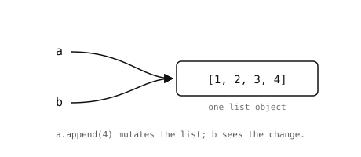

5.7. Lists¶
A list is a mutable, ordered sequence of values. Unlike strings and bytes, lists can hold values of any types, and you can change, add, or remove items in place.
5.7.1. Creating lists¶
Square brackets create a list literal:
empty = []
nums = [1, 2, 3]
mixed = [1, "two", 3.0, True, None] # any types
nested = [[1, 2], [3, 4], [5, 6]] # lists of lists
The list constructor builds a list from any iterable:
>>> list("abc")
['a', 'b', 'c']
>>> list(range(5))
[0, 1, 2, 3, 4]
5.7.2. Length, indexing, and slicing¶
len() returns the number of items. Indexing and slicing
work the same way as strings – positions start at 0, negative
indices count from the end, and a slice outside the valid range
silently clips rather than raising:
>>> nums = [10, 20, 30, 40, 50]
>>> len(nums)
5
>>> nums[0]
10
>>> nums[-1]
50
>>> nums[1:4]
[20, 30, 40]

Positive indices count from the front; negative indices count from the end.¶
The slice syntax is shorthand for a slice object that
Python builds behind the scenes. nums[1:4] is the same as
nums[slice(1, 4)]. You rarely construct one by hand, but
slice() is occasionally useful for storing a slice as a
value to reuse:
head = slice(0, 3)
print(nums[head]) # [10, 20, 30]
print(letters[head]) # first three letters, same slice
5.7.3. Mutating a list¶
Lists support indexed and sliced assignment in place:
>>> nums = [10, 20, 30]
>>> nums[0] = 99
>>> nums
[99, 20, 30]
>>> nums[1:3] = [200, 300, 400] # slice can change the length
>>> nums
[99, 200, 300, 400]
The most common list methods:
list.append()– add a single item to the end.list.extend()– append every item from an iterable.list.insert()– insert at a given position.list.remove()– delete the first occurrence of a value.list.pop()– remove and return an item (last by default).list.clear()– remove every item.list.sort()– sort in place. Passreverse=Truefor descending order.list.reverse()– reverse in place.
>>> nums = []
>>> nums.append(1)
>>> nums.extend([2, 3])
>>> nums.insert(0, 99)
>>> nums
[99, 1, 2, 3]
>>> nums.pop()
3
>>> nums.sort()
>>> nums
[1, 2, 99]
These methods modify the list in place and return None.
Writing
nums = nums.sort() # nums is now None -- common bug
is almost never what you want; the original nums has been
sorted, but the assignment then overwrites the name with the
return value. Either call nums.sort() on its own line, or use
the built-in sorted() to get a new sorted list back without
mutating the original.
5.7.4. Operators¶
+concatenates two lists into a new list.*repeats a list.intests membership.
>>> [1, 2] + [3, 4]
[1, 2, 3, 4]
>>> [0] * 5
[0, 0, 0, 0, 0]
>>> 3 in [1, 2, 3]
True
5.7.5. Iterating over a list¶
A for loop walks the items in order:
for n in [10, 20, 30]:
print(n)
5.7.6. Aliasing and mutation¶
A list is a single value in memory; several names can point at the same list. Mutating through one name is visible through every other name that points at the same list.

a and b both point at the same list. Mutating through
either name changes what every other name sees.¶
>>> a = [1, 2, 3]
>>> b = a
>>> a.append(4)
>>> b
[1, 2, 3, 4] # same object, change is visible
To make an independent copy, slice the whole list or call the
list constructor:
>>> c = a[:] # or list(a)
>>> a.append(5)
>>> c
[1, 2, 3, 4] # c is unaffected
This only copies the top-level list; nested lists are still shared between the original and the copy.